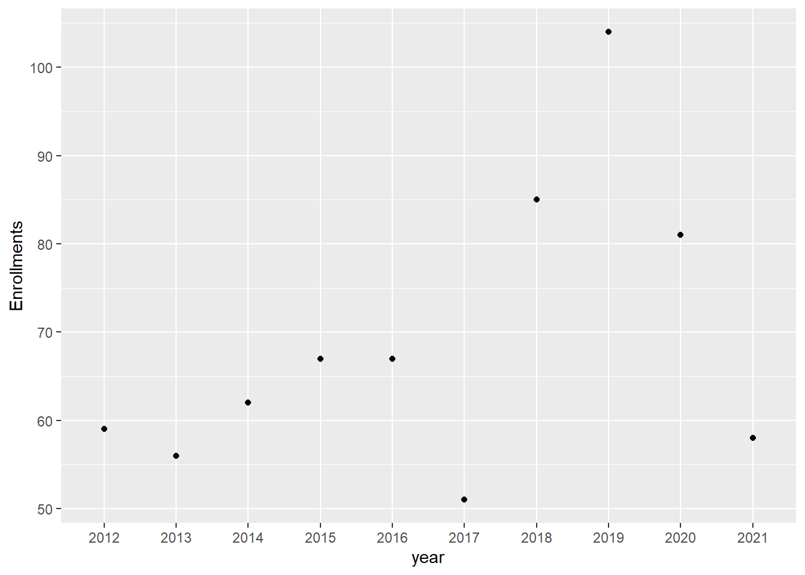
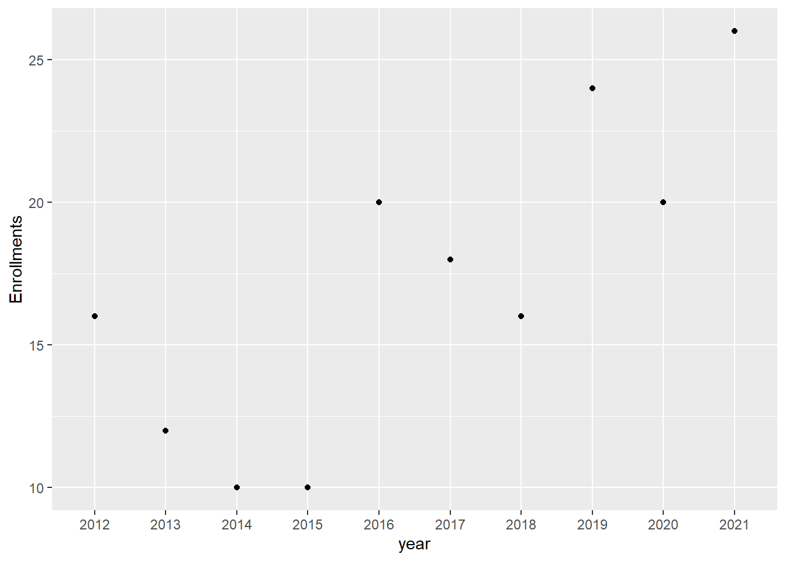
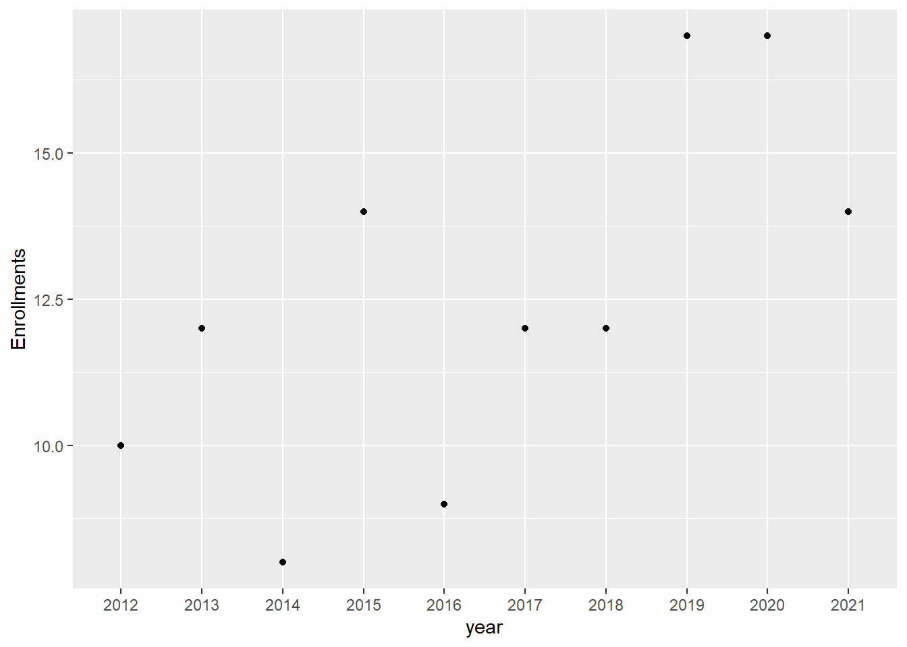

Code
library(tidyverse)
knitr::opts_chunk$set(echo = TRUE)Lai Wei
September 4, 2022
The University of Massachusetts Amherst (UMass Amherst, UMass) is a public research university in Amherst, Massachusetts and the sole public land-grant university in Commonwealth of Massachusetts. It was founded in 1863 as an agricultural college in the beginning. And the department of Mathematics and Statistics is an essential component of various researches and majors in Umass, which provides the student with broad exposure to the most important themes in mathematics and statistics and exposure to computing paradigms (whether in Java, Python, MATLAB, R, and/or SAS).
I will code and analyze mainly based on admission information in mathematics and statistics department.
As a member of the class of 2018, I want to take a glance mainly of how Umass Amherst-math department developed and give a report about student admissions from 2012 to 2021, 9 years in total.The data is from Umass Amherst official website, including both undergraduate and graduate students.
In the first place, I import the data based on First-year, master and Phd students into R.
#Import data about Umass Amherst first-year students in math.
library(readxl)
Admissions_orig <- read_excel("C:/Users/Lai Wei/Desktop/Umass Amherst/DACSS 601/Assignments/Final Project/Admissions_math.xlsx",
sheet = "MATH",
skip = 8,
n_max=5,
col_names = c("stats",2012:2021)) %>%
pivot_longer(cols=starts_with("20"),
names_to = "year",
values_to = "value")%>%
pivot_wider(names_from = "stats", values_from = "value")
Admissions_orig# A tibble: 10 × 6
year Applications Acceptances Enrollments `Acceptance Rate (%)` `Yield (%)`
<chr> <dbl> <dbl> <dbl> <dbl> <dbl>
1 2012 342 257 59 0.751 0.230
2 2013 377 297 56 0.788 0.189
3 2014 428 318 62 0.743 0.195
4 2015 485 358 67 0.738 0.187
5 2016 560 411 67 0.734 0.163
6 2017 662 373 51 0.563 0.137
7 2018 764 603 85 0.789 0.141
8 2019 817 594 104 0.727 0.175
9 2020 772 596 81 0.772 0.136
10 2021 606 490 58 0.809 0.118Admissions<-Admissions_orig%>%
mutate(enrollment_gwth1 = lag(Enrollments, n=1))
#Import data based on master students in math
Admissions_master <- read_excel("C:/Users/Lai Wei/Desktop/Umass Amherst/DACSS 601/Assignments/Final Project/Admissions_math.xlsx",
sheet = "MATH",
skip = 30,
n_max = 5,
col_names = c("stats",2012:2021)) %>%
pivot_longer(cols=starts_with("20"),
names_to = "year",
values_to = "value")%>%
pivot_wider(names_from = "stats", values_from = "value")
Admissions_master# A tibble: 10 × 6
year Applications Acceptances Enrollments `Acceptance Rate (%)` `Yield (%)`
<chr> <dbl> <dbl> <dbl> <dbl> <dbl>
1 2012 110 30 16 0.273 0.533
2 2013 97 22 12 0.227 0.545
3 2014 95 20 10 0.211 0.5
4 2015 99 23 10 0.232 0.435
5 2016 104 38 20 0.365 0.526
6 2017 110 45 18 0.409 0.4
7 2018 113 46 16 0.407 0.348
8 2019 106 58 24 0.547 0.414
9 2020 120 83 20 0.692 0.241
10 2021 112 59 26 0.527 0.441#Import data based on Phd students in math
Admissions_Phd <- read_excel("C:/Users/Lai Wei/Desktop/Umass Amherst/DACSS 601/Assignments/Final Project/Admissions_math.xlsx",
sheet = "MATH",
skip = 37,
n_max = 5,
col_names = c("stats",2012:2021)) %>%
pivot_longer(cols=starts_with("20"),
names_to = "year",
values_to = "value")%>%
pivot_wider(names_from = "stats", values_from = "value")
Admissions_Phd# A tibble: 10 × 6
year Applications Acceptances Enrollments `Acceptance Rate (%)` `Yield (%)`
<chr> <dbl> <dbl> <dbl> <dbl> <dbl>
1 2012 192 32 10 0.167 0.312
2 2013 173 30 12 0.173 0.4
3 2014 173 25 8 0.145 0.32
4 2015 170 32 14 0.188 0.438
5 2016 150 29 9 0.193 0.310
6 2017 163 32 12 0.196 0.375
7 2018 170 30 12 0.176 0.4
8 2019 216 45 17 0.208 0.378
9 2020 190 49 17 0.258 0.347
10 2021 294 36 14 0.122 0.389Secondly, I want to show some basic information of the data, such as column names and dimensions.
[1] "year" "Applications" "Acceptances"
[4] "Enrollments" "Acceptance Rate (%)" "Yield (%)" [1] 10 6Next, for viewing and comparing the data easier, some more essential data will be gotten together. Also, I create some new variables. -enroll_rate: enrollment rate made by enrollment students number / acceptances students number, and both of them from math department.
# A tibble: 10 × 3
Acceptances Enrollments Enroll_rate
<dbl> <dbl> <dbl>
1 257 59 0.230
2 297 56 0.189
3 318 62 0.195
4 358 67 0.187
5 411 67 0.163
6 373 51 0.137
7 603 85 0.141
8 594 104 0.175
9 596 81 0.136
10 490 58 0.118Then I get two mean value according to acceptance rate and enrollment rate from 2012 to 2022.
# A tibble: 1 × 1
accp_mean
<dbl>
1 0.741# A tibble: 1 × 1
enroll_mean
<dbl>
1 0.167From these two number, we can easily see that the average value of acceptance rate is much higher than the average value of enrollment rate, and we can tell it from the low Yields(%) rate as well, which is similar with the yields rate of the whole campus. We can see it from the total admission data.
In this session, I import another two admission information, one is Physics department, and another is the whole admission.
#Import data about Umass Amherst first-year students in Physics.
library(readxl)
Admissions_Phy <- read_excel("C:/Users/Lai Wei/Desktop/Umass Amherst/DACSS 601/Assignments/Final Project/Admissions_math.xlsx",
sheet = "PHYS",
skip = 8,
n_max=5,
col_names = c("stats",2012:2021)) %>%
pivot_longer(cols=starts_with("20"),
names_to = "year",
values_to = "value")%>%
pivot_wider(names_from = "stats", values_from = "value")
Admissions_Phy# A tibble: 10 × 6
year Applications Acceptances Enrollments `Acceptance Rate (%)` `Yield (%)`
<chr> <dbl> <dbl> <dbl> <dbl> <dbl>
1 2012 209 171 46 0.818 0.269
2 2013 214 169 29 0.790 0.172
3 2014 247 201 46 0.814 0.229
4 2015 310 228 41 0.735 0.180
5 2016 351 271 49 0.772 0.181
6 2017 383 235 42 0.614 0.179
7 2018 347 250 38 0.720 0.152
8 2019 385 293 49 0.761 0.167
9 2020 383 315 53 0.822 0.168
10 2021 344 280 44 0.814 0.157#Import data about Yields based on the whole campus.
library(readxl)
Admissions <- read_excel("C:/Users/Lai Wei/Desktop/Umass Amherst/DACSS 601/Assignments/Final Project/Admissions_math.xlsx",
sheet = "Campus",
skip = 17,
n_max = 3,
col_names = c("stats",2012:2021)) %>%
pivot_longer(cols=starts_with("20"),
names_to = "year",
values_to = "value")%>%
pivot_wider(names_from = "stats", values_from = "value")
Admissions# A tibble: 10 × 4
year `Yield (%)` `1st Choice Major (%)` `Alternate Major (%)`
<chr> <dbl> <dbl> <dbl>
1 2012 0.214 0.213 0.219
2 2013 0.205 0.205 0.204
3 2014 0.204 0.205 0.195
4 2015 0.200 0.204 0.183
5 2016 0.191 0.195 0.178
6 2017 0.196 0.195 0.197
7 2018 0.201 0.201 0.200
8 2019 0.214 0.214 0.212
9 2020 0.191 0.186 0.236
10 2021 0.174 0.172 0.201For better vision, I combine two admission form together.
[1] "Row.names" "year.x" "Applications.x"
[4] "Acceptances.x" "Enrollments.x" "Acceptance Rate (%).x"
[7] "Yield (%).x" "year.y" "Applications.y"
[10] "Acceptances.y" "Enrollments.y" "Acceptance Rate (%).y"
[13] "Yield (%).y" Row.names year.x Applications.x Acceptances.x Enrollments.x
1 1 2012 342 257 59
2 10 2021 606 490 58
3 2 2013 377 297 56
4 3 2014 428 318 62
5 4 2015 485 358 67
6 5 2016 560 411 67
7 6 2017 662 373 51
8 7 2018 764 603 85
9 8 2019 817 594 104
10 9 2020 772 596 81
Acceptance Rate (%).x Yield (%).x year.y Applications.y Acceptances.y
1 0.7514620 0.2295720 2012 209 171
2 0.8085809 0.1183673 2021 344 280
3 0.7877984 0.1885522 2013 214 169
4 0.7429907 0.1949686 2014 247 201
5 0.7381443 0.1871508 2015 310 228
6 0.7339286 0.1630170 2016 351 271
7 0.5634441 0.1367292 2017 383 235
8 0.7892670 0.1409619 2018 347 250
9 0.7270502 0.1750842 2019 385 293
10 0.7720207 0.1359060 2020 383 315
Enrollments.y Acceptance Rate (%).y Yield (%).y
1 46 0.8181818 0.2690058
2 44 0.8139535 0.1571429
3 29 0.7897196 0.1715976
4 46 0.8137652 0.2288557
5 41 0.7354839 0.1798246
6 49 0.7720798 0.1808118
7 42 0.6135770 0.1787234
8 38 0.7204611 0.1520000
9 49 0.7610390 0.1672355
10 53 0.8224543 0.1682540 Applications.x Applications.y app_diff
1 342 209 133
2 606 344 262
3 377 214 163
4 428 247 181
5 485 310 175
6 560 351 209
7 662 383 279
8 764 347 417
9 817 385 432
10 772 383 389 Enrollments.x Enrollments.y enrol_diff
1 59 46 13
2 58 44 14
3 56 29 27
4 62 46 16
5 67 41 26
6 67 49 18
7 51 42 9
8 85 38 47
9 104 49 55
10 81 53 28From the comparison, we can see that even though there is a bigger difference in applications, and the gap is in hundreds also more and more, the total enrollment students do not change too many, except in few years the data changed a lot. In addition, the enrollment of math is getting more and more, but in physics, the enrollment stays in a stable range.
This section is about graphs.

From this graph, we can see that in 2019, the enrollment number is the highest in these 9 years, which is more than one hunderd, and 2017 is the lowest. around 50s students. Most of the year is around 60s to 70s, and recent year is very unstable since 2018, when had a obvious increase and 2019 is the peak, then 2021 year goes back to 60s again.

The number of master students in math department is increasing stably. From these 9 years, it grows from 10s to 20s, maybe in the next 5 years, there will be more than 30 master students every year.

Phd students are only a few comparing with other stduents.
DACSS 601 is my first class to learn R step by step. It was quite hard in the beginning, but after I set Github and Rstudio ready everything started to go smoothly, so I think the start point is the most challenging.
Personally speaking, the time of my final project is a bit rush, since I spent my first mainly on figuring out what R and Github is, then I was behind to the whole schedule. As the result, in week 2, I have to make up the content in the first week. Similarly, in week 3, the final project week, I have to go through the challenges and readings of week 2, and that is the reason why my data visualization part is a bit easy, I had no time to go through everything (but I did in week 1 resource.
Back to the project, the reason why I chose to focus on Umass Amherst Math department Admission is because is a understandable topic for me and for almost everyone in Umass.And I was an undergraduate student majored in math before, so I want to know more about the department which I spent 4 years. The process was harder than I thought, but luckily after many DACSS members’ help, I finally imported my data in order.
The most challenge part is that I often met some small problems which blocked the whole process. For example, in many charts, the variable names have blank in so they cannot be called in the regular way. I tried many tips for solving it, such as rename (failed since could not call names with blank in the first place) and some other functions. But eventually I learnt to use `` for names with blank and it works! Since I think those kind of small problems are not big enough to make appointment, I had to try and try all by myself.
From this project, it is obvious that admissions in Math and Statistics department are getting bigger and bigger, but the acceptance rate is not changed a lot, so it must be the total applicants are also growing as time. And in the year 2019 to 2021, the application was unstable and different from other years, so may be COVID also had an influence on it. From the graph, it is hard to see a tendency of Phd students enrollments. I think it may be because Phd application system is more independent and has its own system and rules to decide how many they want each year. Applications are a lot in each year, but enrollments as well as acceptance rate is much lower than master and undergraduate.
In Natural Science College, it is unpredictable that math majors are higher than physics majors, because I think physics is more useful in both research and industry fields. Maybe because physics is more abstract in undergraduate period, or math majors can have more choice in future?
“Admissions data by school and college”, Admissions Statistics, Undergraduate Admissions, Umass Amherst official website, https://www.umass.edu/admissions/undergraduate-admissions/explore/admissions-statistics
---
title: "Final Project"
author: "Lai Wei"
desription: "final project"
date: "09/4/2022"
format:
html:
toc: true
code-fold: true
code-copy: true
code-tools: true
categories:
- hw2
- Lai Wei
- dataset
- ggplot2
editor:
markdown:
wrap: sentence
---
```{r}
#| label: setup
#| warning: false
library(tidyverse)
knitr::opts_chunk$set(echo = TRUE)
```
## Introduction
The University of Massachusetts Amherst (UMass Amherst, UMass) is a public research university in Amherst, Massachusetts and the sole public land-grant university in Commonwealth of Massachusetts.
It was founded in 1863 as an agricultural college in the beginning.
And the department of Mathematics and Statistics is an essential component of various researches and majors in Umass, which provides the student with broad exposure to the most important themes in mathematics and statistics and exposure to computing paradigms (whether in Java, Python, MATLAB, R, and/or SAS).
I will code and analyze mainly based on admission information in mathematics and statistics department.
## Data
As a member of the class of 2018, I want to take a glance mainly of how Umass Amherst-math department developed and give a report about student admissions from 2012 to 2021, 9 years in total.The data is from Umass Amherst official website, including both undergraduate and graduate students.
In the first place, I import the data based on First-year, master and Phd students into R.
```{r}
#Import data about Umass Amherst first-year students in math.
library(readxl)
Admissions_orig <- read_excel("C:/Users/Lai Wei/Desktop/Umass Amherst/DACSS 601/Assignments/Final Project/Admissions_math.xlsx",
sheet = "MATH",
skip = 8,
n_max=5,
col_names = c("stats",2012:2021)) %>%
pivot_longer(cols=starts_with("20"),
names_to = "year",
values_to = "value")%>%
pivot_wider(names_from = "stats", values_from = "value")
Admissions_orig
Admissions<-Admissions_orig%>%
mutate(enrollment_gwth1 = lag(Enrollments, n=1))
#Import data based on master students in math
Admissions_master <- read_excel("C:/Users/Lai Wei/Desktop/Umass Amherst/DACSS 601/Assignments/Final Project/Admissions_math.xlsx",
sheet = "MATH",
skip = 30,
n_max = 5,
col_names = c("stats",2012:2021)) %>%
pivot_longer(cols=starts_with("20"),
names_to = "year",
values_to = "value")%>%
pivot_wider(names_from = "stats", values_from = "value")
Admissions_master
#Import data based on Phd students in math
Admissions_Phd <- read_excel("C:/Users/Lai Wei/Desktop/Umass Amherst/DACSS 601/Assignments/Final Project/Admissions_math.xlsx",
sheet = "MATH",
skip = 37,
n_max = 5,
col_names = c("stats",2012:2021)) %>%
pivot_longer(cols=starts_with("20"),
names_to = "year",
values_to = "value")%>%
pivot_wider(names_from = "stats", values_from = "value")
Admissions_Phd
```
### Describe the Data
Secondly, I want to show some basic information of the data, such as column names and dimensions.
```{r}
#import the number of year, from 2012 to 2021
colnames(Admissions_orig)
#Get the dimension of admission data
dim(Admissions_orig)
```
Next, for viewing and comparing the data easier, some more essential data will be gotten together. Also, I create some new variables.
-enroll_rate: enrollment rate made by enrollment students number / acceptances students number, and both of them from math department.
```{r}
#Show the enrollment rate in undergraduate freshmen
enroll_rate <- select(Admissions_orig,Acceptances,Enrollments)%>%
mutate(Enroll_rate = Enrollments/Acceptances)
enroll_rate
```
Then I get two mean value according to acceptance rate and enrollment rate from 2012 to 2022.
```{r}
#Show the mean of acceptance rate and enrollment rate among 2012-2022
summarise(Admissions_orig, accp_mean = mean(`Acceptance Rate (%)`,na.rm = TRUE))
summarise(enroll_rate,enroll_mean = mean(Enroll_rate,na.rm = TRUE))
```
From these two number, we can easily see that the average value of acceptance rate is much higher than the average value of enrollment rate, and we can tell it from the low Yields(%) rate as well, which is similar with the yields rate of the whole campus. We can see it from the total admission data.
### Data Comparison
In this session, I import another two admission information, one is Physics department, and another is the whole admission.
```{r}
#Import data about Umass Amherst first-year students in Physics.
library(readxl)
Admissions_Phy <- read_excel("C:/Users/Lai Wei/Desktop/Umass Amherst/DACSS 601/Assignments/Final Project/Admissions_math.xlsx",
sheet = "PHYS",
skip = 8,
n_max=5,
col_names = c("stats",2012:2021)) %>%
pivot_longer(cols=starts_with("20"),
names_to = "year",
values_to = "value")%>%
pivot_wider(names_from = "stats", values_from = "value")
Admissions_Phy
#Import data about Yields based on the whole campus.
library(readxl)
Admissions <- read_excel("C:/Users/Lai Wei/Desktop/Umass Amherst/DACSS 601/Assignments/Final Project/Admissions_math.xlsx",
sheet = "Campus",
skip = 17,
n_max = 3,
col_names = c("stats",2012:2021)) %>%
pivot_longer(cols=starts_with("20"),
names_to = "year",
values_to = "value")%>%
pivot_wider(names_from = "stats", values_from = "value")
Admissions
```
For better vision, I combine two admission form together.
```{r}
#Combine two data form together
tab1 <- merge(x = Admissions_orig, y = Admissions_Phy, by = 0, all = TRUE)
colnames(tab1)
tab1
```
```{r}
#create a table that can show the application difference between two majors
select(tab1, Applications.x,Applications.y)%>%
mutate(app_diff = Applications.x - Applications.y)
#create a table that can show the enrollment difference between math and physics
select(tab1,Enrollments.x,Enrollments.y)%>%
mutate(enrol_diff = Enrollments.x - Enrollments.y)
```
From the comparison, we can see that even though there is a bigger difference in applications, and the gap is in hundreds also more and more, the total enrollment students do not change too many, except in few years the data changed a lot. In addition, the enrollment of math is getting more and more, but in physics, the enrollment stays in a stable range.
## Data Visualizition
This section is about graphs.
```{r}
#Bivariate Visualization for undergraduate first-year
ggplot(Admissions_orig,aes(x = year, y = Enrollments))+
geom_point()
```
From this graph, we can see that in 2019, the enrollment number is the highest in these 9 years, which is more than one hunderd, and 2017 is the lowest. around 50s students. Most of the year is around 60s to 70s, and recent year is very unstable since 2018, when had a obvious increase and 2019 is the peak, then 2021 year goes back to 60s again.
```{r}
#Bivariate Visualization for master students in math
ggplot(Admissions_master,aes(x = year, y = Enrollments))+
geom_point()
```
The number of master students in math department is increasing stably. From these 9 years, it grows from 10s to 20s, maybe in the next 5 years, there will be more than 30 master students every year.
```{R}
#Bivariate Visualization for Phd students in math
ggplot(Admissions_Phd,aes(x = year, y = Enrollments))+
geom_point()
```
Phd students are only a few comparing with other stduents.
## Reflection
DACSS 601 is my first class to learn R step by step. It was quite hard in the beginning, but after I set Github and Rstudio ready everything started to go smoothly, so I think the start point is the most challenging.
Personally speaking, the time of my final project is a bit rush, since I spent my first mainly on figuring out what R and Github is, then I was behind to the whole schedule. As the result, in week 2, I have to make up the content in the first week. Similarly, in week 3, the final project week, I have to go through the challenges and readings of week 2, and that is the reason why my data visualization part is a bit easy, I had no time to go through everything (but I did in week 1 resource.
Back to the project, the reason why I chose to focus on Umass Amherst Math department Admission is because is a understandable topic for me and for almost everyone in Umass.And I was an undergraduate student majored in math before, so I want to know more about the department which I spent 4 years. The process was harder than I thought, but luckily after many DACSS members' help, I finally imported my data in order.
The most challenge part is that I often met some small problems which blocked the whole process. For example, in many charts, the variable names have blank in so they cannot be called in the regular way. I tried many tips for solving it, such as rename (failed since could not call names with blank in the first place) and some other functions. But eventually I learnt to use `` for names with blank and it works! Since I think those kind of small problems are not big enough to make appointment, I had to try and try all by myself.
## Conclusion
From this project, it is obvious that admissions in Math and Statistics department are getting bigger and bigger, but the acceptance rate is not changed a lot, so it must be the total applicants are also growing as time. And in the year 2019 to 2021, the application was unstable and different from other years, so may be COVID also had an influence on it. From the graph, it is hard to see a tendency of Phd students enrollments. I think it may be because Phd application system is more independent and has its own system and rules to decide how many they want each year. Applications are a lot in each year, but enrollments as well as acceptance rate is much lower than master and undergraduate.
In Natural Science College, it is unpredictable that math majors are higher than physics majors, because I think physics is more useful in both research and industry fields. Maybe because physics is more abstract in undergraduate period, or math majors can have more choice in future?
## Bibliography
"Admissions data by school and college", Admissions Statistics, Undergraduate Admissions, Umass Amherst official website, https://www.umass.edu/admissions/undergraduate-admissions/explore/admissions-statistics